CHAPTER 21
LEARNING PROBABILISTIC MODELS
In which we view learning as a form of uncertain reasoning from observations, and devise
models to represent the uncertain world.
Chapter 12 pointed out the prevalence of uncertainty in real environments. Agents can handle
uncertainty by using the methods of probability and decision theory, but first they must learn
their probabilistic theories of the world from experience. This chapter explains how they
can do that, by formulating the learning task itself as a process of probabilistic inference
(Section 21.1). We will see that a Bayesian view of learning is extremely powerful, providing
general solutions to the problems of noise, overfitting, and optimal prediction. It also takes
into account the fact that a less-than-omniscient agent can never be certain about which theory
of the world is correct, yet must still make decisions by using some theory of the world.
We describe methods for learning probability models—primarily Bayesian networks—in
Sections 21.2 and 21.3. Some of the material in this chapter is fairly mathematical, although
the general lessons can be understood without plunging into the details. It may benefit the
reader to review Chapters 12 and 13 and peek at Appendix A.
Statistical Learning
The key concepts in this chapter, just as in Chapter 19, are data and hypotheses. Here, the
data are evidence—that is, instantiations of some or all of the random variables describing the
domain. The hypotheses in this chapter are probabilistic theories of how the domain works,
including logical theories as a special case.
Consider a simple example. Our favorite surprise candy comes in two flavors: cherry
(yum) and lime (ugh). The manufacturer has a peculiar sense of humor and wraps each piece
of candy in the same opaque wrapper, regardless of flavor. The candy is sold in very large
bags, of which there are known to be five kinds—again, indistinguishable from the outside:
h1: 100% cherry,
h2: 75% cherry + 25% lime,
h3: 50% cherry + 50% lime,
h4: 25% cherry + 75% lime,
h5: 100% lime.
Given a new bag of candy, the random variable H (for hypothesis) denotes the type of the
bag, with possible values h1 through h5. H is not directly observable, of course. As the
pieces of candy are opened and inspected, data are revealed—D1, D2, . . ., DN, where each Di
is a random variable with possible values cherry and lime. The basic task faced by the agent
Section 21.1 Statistical Learning 773
is to predict the flavor of the next piece of candy.1 Despite its apparent triviality, this scenario
serves to introduce many of the major issues. The agent really does need to infer a theory of
its world, albeit a very simple one.
Bayesian learning simply calculates the probability of each hypothesis, given the data, Bayesian learning
and makes predictions on that basis. That is, the predictions are made by using all the hy-
potheses, weighted by their probabilities, rather than by using just a single “best” hypothesis.
In this way, learning is reduced to probabilistic inference.
Let D represent all the data, with observed value d. The key quantities in the Bayesian ap-
proach are the hypothesis prior, P(hi), and the likelihood of the data under each hypothesis, Hypothesis prior
P(d |hi). The probability of each hypothesis is obtained by Bayes’ rule:
P(hi | d) = αP(d |hi)P(hi) . (21.1)
Now, suppose we want to make a prediction about an unknown quantity X . Then we have
i
P(X | d) = ∑P(X |hi)P(hi | d) , (21.2)
|
where each hypothesis determines a probability distribution over X . This equation shows that
predictions are weighted averages over the predictions of the individual hypotheses, where the
weight P(hi d) is proportional to the prior probability of hi and its degree of fit, according
to Equation (21.1). The hypotheses themselves are essentially “intermediaries” between the
raw data and the predictions.
⟨ ⟩
For our candy example, we will assume for the time being that the prior distribution
over h1, . . . , h5 is given by 0.1, 0.2, 0.4, 0.2, 0.1 , as advertised by the manufacturer. The
likelihood of the data is calculated under the assumption that the observations are i.i.d. (see
page 683), so that
j
P(d |hi) = ∏P(dj |hi) . (21.3)
|
For example, suppose the bag is really an all-lime bag (h5) and the first 10 candies are all
lime; then P(d h3) is 0.510, because half the candies in an h3 bag are lime.2 Figure 21.1(a)
shows how the posterior probabilities of the five hypotheses change as the sequence of 10
lime candies is observed. Notice that the probabilities start out at their prior values, so h3
is initially the most likely choice and remains so after 1 lime candy is unwrapped. After 2
lime candies are unwrapped, h4 is most likely; after 3 or more, h5 (the dreaded all-lime bag)
is the most likely. After 10 in a row, we are fairly certain of our fate. Figure 21.1(b) shows
the predicted probability that the next candy is lime, based on Equation (21.2). As we would
expect, it increases monotonically toward 1.
Likelihood
The example shows that the Bayesian prediction eventually agrees with the true hypoth- K
esis. This is characteristic of Bayesian learning. For any fixed prior that does not rule out the
true hypothesis, the posterior probability of any false hypothesis will, under certain techni-
cal conditions, eventually vanish. This happens simply because the probability of generating
“uncharacteristic” data indefinitely is vanishingly small. (This point is analogous to one made
in the discussion of PAC learning in Chapter 19.) More important, the Bayesian prediction is
1 Statistically sophisticated readers will recognize this scenario as a variant of the urn-and-ball setup. We find
urns and balls less compelling than candy.
2 We stated earlier that the bags of candy are very large; otherwise, the i.i.d. assumption fails to hold. Technically,
it is more correct (but less hygienic) to rewrap each candy after inspection and return it to the bag.
774 Chapter 21 Learning Probabilistic Models
Posterior probability of hypothesis
1
0.8
0.6
0.4
0.2
0
P(h1 | d)
P(h2 | d)
P(h3 | d)
P(h4 | d)
P(h5 | d)
0 2 4 6 8 10
Number of observations in d
(a)
1
Probability that next candy is lime
0.9
0.8
0.7
0.6
0.5
0.4
0 2 4 6 8 10
Number of observations in d
(b)
|
Figure 21.1 (a) Posterior probabilities P(hi d1, . . . , dN) from Equation (21.1). The number
of observations N ranges from 1 to 10, and each observation is of a lime candy. (b) Bayesian
prediction P(DN+1 = lime|d1, . . . , dN) from Equation (21.2).
Maximum a
posteriori
optimal, whether the data set is small or large. Given the hypothesis prior, any other predic-
tion is expected to be correct less often.
The optimality of Bayesian learning comes at a price, of course. For real learning prob-
lems, the hypothesis space is usually very large or infinite, as we saw in Chapter 19. In some
cases, the summation in Equation (21.2) (or integration, in the continuous case) can be carried
out tractably, but in most cases we must resort to approximate or simplified methods.
|
| ≈ |
A very common approximation—one that is usually adopted in science—is to make pre-
dictions based on a single most probable hypothesis—that is, an hi that maximizes P(hi d).
This is often called a maximum a posteriori or MAP (pronounced “em-ay-pee”) hypothesis.
Predictions made according to an MAP hypothesis hMAP are approximately Bayesian to the
extent that P(X d) P(X hMAP). In our candy example, hMAP = h5 after three lime can-
dies in a row, so the MAP learner then predicts that the fourth candy is lime with probability
1.0—a much more dangerous prediction than the Bayesian prediction of 0.8 shown in Fig-
ure 21.1(b). As more data arrive, the MAP and Bayesian predictions become closer, because
the competitors to the MAP hypothesis become less and less probable.
Although this example doesn’t show it, finding MAP hypotheses is often much easier
than Bayesian learning, because it requires solving an optimization problem instead of a
large summation (or integration) problem.
In both Bayesian learning and MAP learning, the hypothesis prior P(hi) plays an im-
portant role. We saw in Chapter 19 that overfitting can occur when the hypothesis space is
too expressive, that is, when it contains many hypotheses that fit the data set well. Bayesian
and MAP learning methods use the prior to penalize complexity. Typically, more complex
hypotheses have a lower prior probability—in part because there so many of them. On the
other hand, more complex hypotheses have a greater capacity to fit the data. (In the extreme
case, a lookup table can reproduce the data exactly.) Hence, the hypothesis prior embodies a
tradeoff between the complexity of a hypothesis and its degree of fit to the data.
Section 21.2 Learning with Complete Data 775
| i i
We can see the effect of this tradeoff most clearly in the logical case, where H contains
only deterministic hypotheses (such as h1, which says that every candy is cherry). In that
case, P(d h ) is 1 if h is consistent and 0 otherwise. Looking at Equation (21.1), we see
that hMAP will then be the simplest logical theory that is consistent with the data. Therefore, K
maximum a posteriori learning provides a natural embodiment of Ockham’s razor.
|
Another insight into the tradeoff between complexity and degree of fit is obtained by tak-
ing the logarithm of Equation (21.1). Choosing hMAP to maximize P(d hi)P(hi) is equivalent
to minimizing
− log2 P(d |hi) − log2 P(hi) .
— |
Using the connection between information encoding and probability that we introduced in
Section 19.3.3, we see that the − log2 P(hi) term equals the number of bits required to spec-
ify the hypothesis hi. Furthermore, log2 P(d hi) is the additional number of bits required
to specify the data, given the hypothesis. (To see this, consider that no bits are required
if the hypothesis predicts the data exactly—as with h5 and the string of lime candies—and
log2 1 = 0.) Hence, MAP learning is choosing the hypothesis that provides maximum com-of the data. The same task is addressed more directly by the minimum description, or MDL, learning method. Whereas MAP learning expresses simplicity by assigning
higher probabilities to simpler hypotheses, MDL expresses it directly by counting the bits in
a binary encoding of the hypotheses and data.
|
A final simplification is provided by assuming a uniform prior over the space of hypothe-
ses. In that case, MAP learning reduces to choosing an hi that maximizes P(d hi). This is
called a maximum-likelihood hypothesis, hML. Maximum-likelihood learning is very com- Maximum-likelihood
mon in statistics, a discipline in which many researchers distrust the subjective nature of hy-
pothesis priors. It is a reasonable approach when there is no reason to prefer one hypothesis
over another a priori—for example, when all hypotheses are equally complex.
When the data set is large, the prior distribution over hypotheses is less important—the
evidence from the data is strong enough to swamp the prior distribution over hypotheses. That
means maximum likelihood learning is a good approximation to Bayesian and MAP learning
with large data sets, but it has problems (as we shall see) with small data sets.
Learning with Complete Data
The general task of learning a probability model, given data that are assumed to be generated
from that model, is called density estimation. (The term applied originally to probability Density estimation
density functions for continuous variables, but it is used now for discrete distributions too.)
Density estimation is a form of unsupervised learning. This section covers the simplest case,
where we have complete data. Data are complete when each data point contains values Complete data
for every variable in the probability model being learned. We focus on parameter learn-
ing—finding the numerical parameters for a probability model whose structure is fixed. For Parameter learning
example, we might be interested in learning the conditional probabilities in a Bayesian net-
work with a given structure. We will also look briefly at the problem of learning structure and
at nonparametric density estimation.
776 Chapter 21 Learning Probabilistic Models
Log likelihood
Maximum-likelihood parameter learning: Discrete models
—
—
Suppose we buy a bag of lime and cherry candy from a new manufacturer whose flavor pro-
portions are completely unknown; the fraction of cherry could be anywhere between 0 and 1.
In that case, we have a continuum of hypotheses. The parameter in this case, which we
call θ, is the proportion of cherry candies, and the hypothesis is hθ. (The proportion of lime
candies is just 1 θ.) If we assume that all proportions are equally likely a priori, then
a maximum-likelihood approach is reasonable. If we model the situation with a Bayesian
network, we need just one random variable, Flavor (the flavor of a randomly chosen candy
from the bag). It has values cherry and lime, where the probability of cherry is θ (see Fig-
ure 21.2(a)). Now suppose we unwrap N candies, of which c are cherry and l = N c are
lime. According to Equation (21.3), the likelihood of this particular data set is
N
j = 1
P(d |hθ) = ∏ P(dj |hθ) = θc · (1 − θ)l .
The maximum-likelihood hypothesis is given by the value of θ that maximizes this expres-
sion. Because the log function is monotonic, the same value is obtained by maximizing the
log likelihood instead:
N
j = 1
L(d |hθ) = log P(d |hθ) = ∑ log P(dj |hθ) = c log θ + l log(1 − θ) .
(By taking logarithms, we reduce the product to a sum over the data, which is usually easier
to maximize.) To find the maximum-likelihood value of θ, we differentiate L with respect to
θ and set the resulting expression to zero:
dL(d |hθ) = c − l = 0 ⇒ θ = c = c .
dθ θ
1 − θ
c + l N
In English, then, the maximum-likelihood hypothesis hML asserts that the actual proportion
of cherry candies in the bag is equal to the observed proportion in the candies unwrapped so
far!
It appears that we have done a lot of work to discover the obvious. In fact, though, we
have laid out one standard method for maximum-likelihood parameter learning, a method
with broad applicability:
Write down an expression for the likelihood of the data as a function of the parameter(s).
Write down the derivative of the log likelihood with respect to each parameter.
Find the parameter values such that the derivatives are zero.
The trickiest step is usually the last. In our example, it was trivial, but we will see that in
many cases we need to resort to iterative solution algorithms or other numerical optimiza-
tion techniques, as described in Section 4.2. (We will need to verify that the Hessian ma-
trix is negative-definite.) The example also illustrates a significant problem with maximum-
likelihood learning in general: when the data set is small enough that some events have not
yet been observed—for instance, no cherry candies—the maximum-likelihood hypothesis as-
signs zero probability to those events. Various tricks are used to avoid this problem, such as
initializing the counts for each event to 1 instead of 0.
Let us look at another example. Suppose this new candy manufacturer wants to give a
little hint to the consumer and uses candy wrappers colored red and green. The Wrapper for
Section 21.2 Learning with Complete Data 777
Flavor
P(F=cherry)
F | P(W=red | F) |
cherry |
1 |
lime | 2 |
Flavor
Wrapper
P(F=cherry)
(a) (b)
Figure 21.2 (a) Bayesian network model for the case of candies with an unknown proportion
of cherry and lime. (b) Model for the case where the wrapper color depends (probabilisti-
cally) on the candy flavor.
each candy is selected probabilistically, according to some unknown conditional distribution,
depending on the flavor. The corresponding probability model is shown in Figure 21.2(b).
Notice that it has three parameters: θ, θ1, and θ2. With these parameters, the likelihood of
seeing, say, a cherry candy in a green wrapper can be obtained from the standard semantics
for Bayesian networks (page 433):
P(Flavor = cherry, Wrapper = green|hθ,θ1,θ2 )
= P(Flavor = cherry|hθ,θ1,θ2 )P(Wrapper = green|Flavor = cherry, hθ,θ1,θ2 )
= θ · (1 − θ1) .
Now we unwrap N candies, of which c are cherry and l are lime. The wrapper counts are as
follows: rc of the cherry candies have red wrappers and gc have green, while rl of the lime
candies have red and gl have green. The likelihood of the data is given by
1
2
1
2
P(d |hθ,θ ,θ ) = θc(1 − θ)l · θrc (1 − θ1)gc · θrl (1 − θ2)gl .
This looks pretty horrible, but taking logarithms helps:
L = [c log θ + l log(1 − θ)] + [rc log θ1 + gc log(1 − θ1)] + [rl log θ2 + gl log(1 − θ2)] .
The benefit of taking logs is clear: the log likelihood is the sum of three terms, each of which
contains a single parameter. When we take derivatives with respect to each parameter and set
them to zero, we get three independent equations, each containing just one parameter:
∂L = c − l = 0 ⇒ θ = c
∂θ θ
1−θ
c+l
∂L
= rc − gc = 0 ⇒ θ1 = rc
∂θ1
θ1 1−θ1
rc+gc
∂L
= rl − gl = 0 ⇒ θ2 = rl .
∂θ2
θ2 1−θ2
rl+gl
The solution for θ is the same as before. The solution for θ1, the probability that a cherry
candy has a red wrapper, is the observed fraction of cherry candies with red wrappers, and
similarly for θ2.
These results are very comforting, and it is easy to see that they can be extended to any
Bayesian network whose conditional probabilities are represented as tables. The most impor-
778 Chapter 21 Learning Probabilistic Models
Generative model
tant point is that with complete data, the maximum-likelihood parameter learning problem(See Exercise 21.NORX for the nontabulated case, where each parameter affects several
conditional probabilities.) The second point is that the parameter values for a variable, given
its parents, are just the observed frequencies of the variable values for each setting of the
parent values. As before, we must be careful to avoid zeroes when the data set is small.
Naive Bayes models
Probably the most common Bayesian network model used in machine learning is the naivemodel first introduced on page 420. In this model, the “class” variable C (which is to
be predicted) is the root and the “attribute” variables Xi are the leaves. The model is “naive”
because it assumes that the attributes are conditionally independent of each other, given the
class. (The model in Figure 21.2(b) is a naive Bayes model with class Flavor and just one
attribute, Wrapper.) In the case of Boolean variables, the parameters are
θ = P(C = true), θi1 = P(Xi = true|C = true), θi2 = P(Xi = true|C = false).
The maximum-likelihood parameter values are found in exactly the same way as in Fig-
ure 21.2(b). Once the model has been trained in this way, it can be used to classify new ex-
amples for which the class variable C is unobserved. With observed attribute values x1, . . . , xn,
the probability of each class is given by
i
P(C|x1, . . . , xn) = α P(C) ∏P(xi |C) .
A deterministic prediction can be obtained by choosing the most likely class. Figure 21.3
shows the learning curve for this method when it is applied to the restaurant problem from
Chapter 19. The method learns fairly well but not as well as decision tree learning; this is pre-
sumably because the true hypothesis—which is a decision tree—is not representable exactly
using a naive Bayes model. Naive Bayes learning turns out to do surprisingly well in a wide
range of applications; the boosted version (Exercise 21.BNBX) is one of the most effective
general-purpose learning algorithms. Naive Bayes learning scales well to very large prob-
lems: with n Boolean attributes, there are just 2n + 1 parameters, and no search is requiredML, the maximum-likelihood naive Bayes hypothesis. Finally, naive Bayes learning
systems deal well with noisy or missing data and can give probabilistic predictions when ap-
propriate. Their primary drawback is the fact that the conditional independence assumption
is seldom accurate; as noted on page 421, the assumption leads to overconfident probabilities
that are often very close to 0 or 1, especially with large numbers of attributes.
Generative and discriminative models
|
We can distinguish two kinds of machine learning models used for classifiers: generative and
discriminative. A generative model models the probability distribution of each class. For
example, the naive Bayes text classifier from Section 12.6.1 creates a separate model for each
possible category of text—one for sports, one for weather, and so on. Each model includes
the prior probability of the category—for example P(Category = weather)—as well as the
conditional probability P(Inputs Category = weather). From these we can compute the joint
probability P(Inputs, Category = weather)) and we can generate a random selection of words
that is representative of texts in the weather category.
Section 21.2 Learning with Complete Data 779
Decision tree
Naive Bayes
1
Proportion correct on test set
0.9
0.8
0.7
0.6
0.5
0.4
0 20 40 60 80 100
Training set size
Figure 21.3 The learning curve for naive Bayes learning applied to the restaurant problem
from Chapter 19; the learning curve for decision tree learning is shown for comparison.
A discriminative model directly learns the decision boundary between classes. That is, Discriminative model
|
it learns P(Category Inputs). Given example inputs, a discriminative model will come up
with an output category, but you cannot use a discriminative model to, say, generate random
words that are representative of a category. Logistic regression, decision trees, and support
vector machines are all discriminative models.
Since discriminative models put all their emphasis on defining the decision boundary—
that is, actually doing the classification task they were asked to do—they tend to perform
better in the limit, with an arbitrary amount of training data. However, with limited data, in
some cases a generative model performs better. (Ng and Jordan, 2002) compare the generative
naive Bayes classifier to the discriminative logistic regression classifier on 15 (small) data
sets, and find that with the maximum amount of data, the discriminative model does better on
9 out of 15 data sets, but with only a small amount of data, the generative model does better
on 14 out of 15 data sets.
Maximum-likelihood parameter learning: Continuous models
Continuous probability models such as the linear–Gaussian model were shown on page 440.
Because continuous variables are ubiquitous in real-world applications, it is important to
know how to learn the parameters of continuous models from data. The principles for
maximum-likelihood learning are identical in the continuous and discrete cases.
Let us begin with a very simple case: learning the parameters of a Gaussian density
function on a single variable. That is, we assume the data are generated as follows:
1 − (x−µ)2
√
P(x) = e
σ 2π
2σ2 .
The parameters of this model are the mean µ and the standard deviation σ. (Notice that the
normalizing “constant” depends on σ, so we cannot ignore it.) Let the observed values be
780 Chapter 21 Learning Probabilistic Models
1
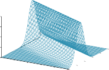
P(y|x)
4
3
2
1
0
1
0.8
0.8
y
0.6
0.4
0.2
y
0 0.2
0.4
x
0.6
0.4
0.6 0.8 1 0 0.2
(a)
0
0 0.1 0.2 0.3 0.4 0.5 0.6 0.7 0.8 0.9 1
x
(b)
Figure 21.4 (a) A linear–Gaussian model described as y = θ1x + θ2 plus Gaussian noise with
fixed variance. (b) A set of 50 data points generated from this model and the best-fit line.
x1, . . . , xN. Then the log likelihood is
∑
N 1
— (x j−µ)2
√ N
(x j − µ)2
√
L = log e
j =1 σ 2π
2σ2 = N(− log
2π log σ) ∑
j = 1
2σ2 .
− −
Setting the derivatives to zero as usual, we obtain
∂µ
σ2
j=1
∂L = − 1 ∑N
(x j − µ) = 0 ⇒ µ = ∑j xj
N
∂σ
σ
σ3
∂L = −N + 1 ∑N
(x − µ)2 = 0 ⇒ σ = q∑ j (x j−µ)2 . (21.4)
j=1
j
N
That is, the maximum-likelihood value of the mean is the sample average and the maximum-
likelihood value of the standard deviation is the square root of the sample variance. Again,
these are comforting results that confirm “commonsense” practice.
Now consider a linear–Gaussian model with one continuous parent X and a continuous
child Y . As explained on page 440, Y has a Gaussian distribution whose mean depends
linearly on the value of X and whose standard deviation is fixed. To learn the conditional
distribution P(Y |X ), we can maximize the conditional likelihood
√
− − 1 2
| σ
1
P(y x) = e
2π
(y (θ x+θ ))2
2σ2 . (21.5)
—
Here, the parameters are θ1, θ2, and σ. The data are a collection of (x j, y j) pairs, as illustrated
in Figure 21.4. Using the usual methods (Exercise 21.LINR), we can find the maximum-
likelihood values of the parameters. The point here is different. If we consider just the
parameters θ1 and θ2 that define the linear relationship between x and y, it becomes clear
that maximizing the log likelihood with respect to these parameters is the same as minimizingthe numerator (y (θ1x + θ2))2 in the exponent of Equation (21.5). This is the L2 loss, the
squared error between the actual value y and the prediction θ1x + θ2.
This is the quantity minimized by the standard linear regression procedure described in
Section 19.6. Now we can understand why: minimizing the sum of squared errors gives the
maximum-likelihood straight-line model, provided that the data are generated with Gaussian.
Section 21.2 Learning with Complete Data 781
2.5
2
P( = )
1.5
1
0.5
0
[5,5]
[2,2]
[1,1]
0 0.2 0.4 0.6 0.8 1
Parameter
(a)
6
[30,10]
[6,2]
[3,1]
5
P( = )
4
3
2
1
0
0 0.2 0.4 0.6 0.8 1
Parameter
(b)
Figure 21.5 Examples of the Beta(a, b) distribution for different values of (a, b).
Bayesian parameter learning
Maximum-likelihood learning gives rise to simple procedures, but it has serious deficiencies
with small data sets. For example, after seeing one cherry candy, the maximum-likelihood
hypothesis is that the bag is 100% cherry (i.e., θ = 1.0). Unless one’s hypothesis prior is that
bags must be either all cherry or all lime, this is not a reasonable conclusion. It is more likely
that the bag is a mixture of lime and cherry. The Bayesian approach to parameter learning
starts with a hypothesis prior and updates the distribution as data arrive.
The candy example in Figure 21.2(a) has one parameter, θ: the probability that a ran-
domly selected piece of candy is cherry-flavored. In the Bayesian view, θ is the (unknown)
value of a random variable Θ that defines the hypothesis space; the hypothesis prior is the
prior distribution over P(Θ). Thus, P(Θ= θ) is the prior probability that the bag has a frac-
tion θ of cherry candies.
If the parameter θ can be any value between 0 and 1, then P(Θ) is a continuous probability
density function (see Section A.3). If we don’t know anything about the possible values of θ
we can use the uniform density function P(θ) = Uniform(θ; 0, 1), which says all values are
equally likely.
A more flexible family of probability density functions is known as the beta distribu-
tions. Each beta distribution is defined by two hyperparameters3 a and b such that Beta distribution
Beta(θ; a, b) = α θa−1(1 − θ)b−1 , (21.6)
for θ in the range [0, 1]. The normalization constant α, which makes the distribution integrate
to 1, depends on a and b. Figure 21.5 shows what the distribution looks like for various
values of a and b. The mean value of the beta distribution is a/(a + b), so larger values of asuggest a belief that Θ is closer to 1 than to 0. Larger values of a + b make the distribution
more peaked, suggesting greater certainty about the value of Θ. It turns out that the uniform
density function is the same as Beta(1, 1): the mean is 1/2, and the distribution is flat.
3 They are called hyperparameters because they parameterize a distribution over θ, which is itself a parameter.
Hyperparameter
782 Chapter 21 Learning Probabilistic Models
Θ
Flavor1
Flavor2
Flavor3
Wrapper1
Wrapper2
Wrapper3
Θ1
Θ2
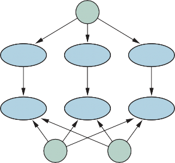
Figure 21.6 A Bayesian network that corresponds to a Bayesian learning process. Poste-
rior distributions for the parameter variables Θ, Θ1, and Θ2 can be inferred from their prior
distributions and the evidence in Flavori and Wrapperi.
Conjugate prior
Virtual count
Besides its flexibility, the beta family has another wonderful property: if Θ has a prior
Beta(a, b), then, after a data point is observed, the posterior distribution for Θ is also a beta
distribution. In other words, Beta is closed under update. The beta family is called the
conjugate prior for the family of distributions for a Boolean variable.4 Let’s see how this
works. Suppose we observe a cherry candy; then we have
P(θ |D1 = cherry) = α P(D1 = cherry| θ)P(θ)
= α′ θ · Beta(θ; a, b) = α′ θ · θa−1(1 − θ)b−1
= α′ θa(1 − θ)b−1 = α′ Beta(θ; a + 1, b) .
—
—
Thus, after seeing a cherry candy, we simply increment the a parameter to get the posterior;
similarly, after seeing a lime candy, we increment the b parameter. Thus, we can view the aand b hyperparameters as virtual counts, in the sense that a prior Beta(a, b) behaves exactly
as if we had started out with a uniform prior Beta(1, 1) and seen a 1 actual cherry candies
and b 1 actual lime candies.
By examining a sequence of beta distributions for increasing values of a and b, keeping
the proportions fixed, we can see vividly how the posterior distribution over the parameter
Θ changes as data arrive. For example, suppose the actual bag of candy is 75% cherry. Fig-
ure 21.5(b) shows the sequence Beta(3, 1), Beta(6, 2), Beta(30, 10). Clearly, the distribution
is converging to a narrow peak around the true value of Θ. For large data sets, then, Bayesian
learning (at least in this case) converges to the same answer as maximum-likelihood learning.
Now let us consider a more complicated case. The network in Figure 21.2(b) has three
parameters, θ, θ1, and θ2, where θ1 is the probability of a red wrapper on a cherry candy and
4 Other conjugate priors include the Dirichlet family for the parameters of a discrete multivalued distribution
and the Normal–Wishart family for the parameters of a Gaussian distribution. See Bernardo and Smith (1994).
Section 21.2 Learning with Complete Data 783
θ2 is the probability of a red wrapper on a lime candy. The Bayesian hypothesis prior must
cover all three parameters—that is, we need to specify P(Θ, Θ1, Θ2). Usually, we assume
independence
parameter independence: Parameter
P(Θ, Θ1, Θ2) = P(Θ)P(Θ1)P(Θ2) .
With this assumption, each parameter can have its own beta distribution that is updated sepa-
rately as data arrive. Figure 21.6 shows how we can incorporate the hypothesis prior and any
data into a Bayesian network, in which we have a node for each parameter variable.
The nodes Θ, Θ1, Θ2 have no parents. For the ith observation of a wrapper and corre-
sponding flavor of a piece of candy, we add nodes Wrapperi and Flavori. Flavori is dependent
on the flavor parameter Θ:
P(Flavori = cherry| Θ= θ) = θ .
Wrapperi is dependent on Θ1 and Θ2:
P(Wrapperi = red |Flavori = cherry, Θ1 = θ1) = θ1
P(Wrapperi = red |Flavori = lime, Θ2 = θ2) = θ2 .
Now, the entire Bayesian learning process for the original Bayes net in Figure 21.2(b) can be
formulated as an inference problem in the derived Bayes net shown in Figure 21.6, where the
data and parameters become nodes. Once we have added all the new evidence nodes, we can
then query the parameter variables (in this case, Θ, Θ1, Θ2). Under this formulation there is K
just one learning algorithm—the inference algorithm for Bayesian networks.
Of course, the nature of these networks is somewhat different from those of Chapter 13
because of the potentially huge number of evidence variables representing the training set
and the prevalence of continuous-valued parameter variables. Exact inference may be impos-
sible except in very simple cases such as the naive Bayes model. Practitioners typically use
approximate inference methods such as MCMC (Section 13.4.2); many statistical software
packages incorporate efficient implementations of MCMC for this purpose.
Bayesian linear regression
Here we illustrate how to apply a Bayesian approach to a standard statistical task: linear
regression. The conventional approach was described in Section 19.6 as minimizing the sum
of squared errors and reinterpreted in Section 21.2.4 as maximizing likelihood assuming a
Gaussian error model. These produce a single best hypothesis: a straight line with specific
values for the slope and intercept and a fixed variance for the prediction error at any given
point. There is no measure of how confident one should be in the slope and intercept values.
Furthermore, if one is predicting a value for an unseen data point far from the observed
data points, it seems to make no sense to assume a prediction error that is the same as the
prediction error for a data point right next to an observed data point. It would seem more
sensible for the prediction error to be larger, the farther the data point is from the observed
data, because a small change in the slope will cause a large change in the predicted value for
a distant point.
The Bayesian approach fixes both of these problems. The general idea, as in the preceding
section, is to place a prior on the model parameters—here, the coefficients of the linear model
and the noise variance—and then to compute the parameter posterior given the data. For
multivariate data and unknown noise model, this leads to rather a lot of linear algebra, so we
784 Chapter 21 Learning Probabilistic Models
focus on a simple case: univariable data, a model that is constrained to go through the origin,
and known noise: a normal distribution with variance σ2. Then we have just one parameter θ
and the model is
1 − 1 (y−θx)2
y
√
σ
P(y|x, θ) = N (y; θx, σ2) =
e 2 σ2
2π
. (21.7)
0
As the log likelihood is quadratic in θ, the appropriate form for a conjugate prior on θ is also
a Gaussian. This ensures that the posterior for θ will also be Gaussian. We’ll assume a mean
θ0 and variance σ2 for the prior, so that
1 − 1 (θ−θ0)2
0
√
σ
N
0
P(θ) = (θ; θ0, σ2) =
σ0
e 2
2π
2 . (21.8)
Uninformative prior
Depending on the data being modeled, one might have some idea of what sort of slope θ
to expect, or one might be completely agnostic. In the latter case, it makes sense to choose
θ0 to be 0 and σ2 to be large—a so-called uninformative prior. Finally, we can assume a
prior P(x) for the x-value of each data point, but this is completely immaterial to the analysis
because it doesn’t depend on θ.
0
| |
Now the setup is complete, so we can compute the posterior for θ using Equation (21.1):
P(θ d) ∝ P(d θ)P(θ). The observed data points are d =(x1, y1), . . . , (xN, yN), so the likeli-
hood for the data is obtained from Equation (21.7) as follows:
P(d | θ) =
∏P(xi)
∏P(yi |xi, θ)) = α ∏e
2
σ2
i
i
i
! − 1 (yi−θxi)2
= αe
2
i
σ2
,
— 1 ∑ (yi−θxi)2
where we have absorbed the x-value priors and the normalizing constants for the N Gaussians
into a constant α that is independent of θ. Now we combine this and the parameter prior from
Equation (21.8) to obtain the posterior:
— 1 (θ−θ0)2 − 1 ∑ (yi−θxi)2
σ
e
σ
P(θ |
d) = α′′e 2
2 2 i 2
0 .
Although this looks complicated, each exponent is a quadratic function of θ, so the sum of
the two exponents is as well. Hence, the whole expression represents a Gaussian distribution
for θ. Using algebraic manipulations very similar to those in Section 14.4, we find
σ
P(θ | d) = α′′′e
2
2
N
— 1 (θ−θN )2
with “updated” mean and variance given by
σ2θ0 + σ2 ∑i xiyi
2 σ2σ2
θN =
0
σ2 + σ2 ∑i x2
and 0
σ2 + σ2 ∑i x2
0 i 0 i
σN = .
i
Let’s look at these formulas to see what they mean. When the data are narrowly concentrated
on a small region of the x-axis near the origin, ∑i x2 will be small and the posterior variance
σ2 will be large, roughly equal to the prior variance σ2. This is as one would expect: the data
N 0
do little to constrain the rotation of the line around the origin. Conversely, when the data are
widely spread along the axis, ∑i x2 will be large and the posterior variance σ2 will be small,
i N
i
roughly equal to σ2/(∑i x2), so the slope will be very tightly constrained.
Section 21.2 Learning with Complete Data 785
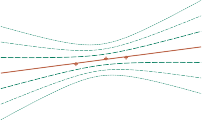
6
4
2
y
0
-2
-4
-6
-2 -1.5 -1 -0.5 0 0.5 1 1.5 2
x
6
4
2
y
0
-2
-4
-6
-2 -1.5 -1 -0.5 0 0.5 1 1.5 2
x
(a) (b)
N
≈
± ± ±
Figure 21.7 Bayesian linear regression with a model constrained to pass through the origin
and fixed noise variance σ2 = 0.2. Contours at 1, 2, and 3 standard deviations are
shown for the predictive density. (a) With three data points near the origin, the slope is quite
uncertain, with σ2 0.3861. Notice how the uncertainty increases with distance from the
observed data points. (b) With two additional data points further away, the slope θ is very
tightly constrained, with σ2 ≈ 0.0286. The remaining variance in the predictive density is
N 2
almost entirely due to the fixed noise σ .
To make a prediction at a specific data point, we have to integrate over the possible values
of θ, as suggested by Equation (21.2):
P y|x d ∫ ∞ P y|x d P |x d d ∫ ∞ P y|x P | d d
( , ) = (
−∞
, , θ) (θ
, ) θ = (
σ
N
−∞
, θ) (θ ) θ
∫ ∞ − 1 (y−θx)2
— 1 (θ−θN )2
= α e 2
−∞
σ2 e 2
2 dθ
Again, the sum of the two exponents is a quadratic function of θ, so we have a Gaussian over
θ whose integral is 1. The remaining terms in y form another Gaussian:
P(y|x, d) ∝ e
2
σ2+σ2 x2
.
— 1 (y−θNx)2
N
Looking at this expression, we see that the mean prediction for y is θNx, that is, it is based
on the posterior mean for θ. The variance of the prediction is given by the model noise σ2
plus a term proportional to x2, which means that the standard deviation of the prediction
increases asymptotically linearly with the distance from the origin. Figure 21.7 illustrates
this phenomenon. As noted at the beginning of this section, having greater uncertainty for
predictions that are further from the observed data points makes perfect sense.
Learning Bayes net structures
So far, we have assumed that the structure of the Bayes net is given and we are just trying to
learn the parameters. The structure of the network represents basic causal knowledge about
the domain that is often easy for an expert, or even a naive user, to supply. In some cases,
however, the causal model may be unavailable or subject to dispute—for example, certain
corporations have long claimed that smoking does not cause cancer and other corporations
786 Chapter 21 Learning Probabilistic Models
assert that CO2 concentrations have no effect on climate—so it is important to understand
how the structure of a Bayes net can be learned from data. This section gives a brief sketch
of the main ideas.
The most obvious approach is to search for a good model. We can start with a model
containing no links and begin adding parents for each node, fitting the parameters with the
methods we have just covered and measuring the accuracy of the resulting model. Alterna-
tively, we can start with an initial guess at the structure and use hill climbing or simulated
annealing search to make modifications, retuning the parameters after each change in the
structure. Modifications can include reversing, adding, or deleting links. We must not in-
troduce cycles in the process, so many algorithms assume that an ordering is given for the
variables, and that a node can have parents only among those nodes that come earlier in the
ordering (just as in the construction process in Chapter 13). For full generality, we also need
to search over possible orderings.
There are two alternative methods for deciding when a good structure has been found.
The first is to test whether the conditional independence assertions implicit in the structure are
actually satisfied in the data. For example, the use of a naive Bayes model for the restaurant
problem assumes that
P(Hungry, Bar|WillWait) = P(Hungry|WillWait) P(Bar|WillWait)
and we can check in the data whether the same equation holds between the corresponding
conditional frequencies. But even if the structure describes the true causal nature of the
domain, statistical fluctuations in the data set mean that the equation will never be satisfied
exactly, so we need to perform a suitable statistical test to see if there is sufficient evidence
that the independence hypothesis is violated. The complexity of the resulting network will
depend on the threshold used for this test—the stricter the independence test, the more links
will be added and the greater the danger of overfitting.
An approach more consistent with the ideas in this chapter is to assess the degree to
which the proposed model explains the data (in a probabilistic sense). We must be careful
how we measure this, however. If we just try to find the maximum-likelihood hypothesis, we
will end up with a fully connected network, because adding more parents to a node cannot
decrease the likelihood (Exercise 21.MLPA). We are forced to penalize model complexity in
some way. The MAP (or MDL) approach simply subtracts a penalty from the likelihood of
each structure (after parameter tuning) before comparing different structures. The Bayesian
approach places a joint prior over structures and parameters. There are usually far too many
structures to sum over (superexponential in the number of variables), so most practitioners
use MCMC to sample over structures.
Penalizing complexity (whether by MAP or Bayesian methods) introduces an important
connection between the optimal structure and the nature of the representation for the con-
ditional distributions in the network. With tabular distributions, the complexity penalty for
a node’s distribution grows exponentially with the number of parents, but with, say, noisy-
OR distributions, it grows only linearly. This means that learning with noisy-OR (or other
compactly parameterized) models tends to produce learned structures with more parents than
does learning with tabular distributions.
Section 21.2 Learning with Complete Data 787
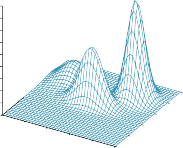
Density
18
16
14
12
10
8
6
4
2
0 0
0.2 0.4
0.6 0.8
1
0.8
0.6
0.4
0.2
1 0
1
0.9
0.8
0.7
0.6
0.5
0.4
0.3
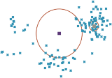
0 0.2 0.4 0.6 0.8 1
(a) (b)
Figure 21.8 (a) A 3D plot of the mixture of Gaussians from Figure 21.12(a). (b) A 128-point
sample of points from the mixture, together with two query points (small orange squares) and
their 10-nearest-neighborhoods (large circle and smaller circle to the right).
Density estimation with nonparametric models
It is possible to learn a probability model without making any assumptions about its structure
and parameterization by adopting the nonparametric methods of Section 19.7. The task of
density estimation
nonparametric density estimation is typically done in continuous domains, such as that Nonparametric
shown in Figure 21.8(a). The figure shows a probability density function on a space defined
by two continuous variables. In Figure 21.8(b) we see a sample of data points from this
density function. The question is, can we recover the model from the samples?
First we will consider k-nearest-neighbors models. (In Chapter 19 we saw nearest-
neighbor models for classification and regression; here we see them for density estimation.)
Given a sample of data points, to estimate the unknown probability density at a query point xwe can simply measure the density of the data points in the neighborhood of x. Figure 21.8(b)
shows two query points (small squares). For each query point we have drawn the smallest
circle that encloses 10 neighbors—the 10-nearest-neighborhood. We can see that the central
circle is large, meaning there is a low density there, and the circle on the right is small,
meaning there is a high density there. In Figure 21.9 we show three plots of density estimation
using k-nearest-neighbors, for different values of k. It seems clear that (b) is about right, while
(a) is too spiky (k is too small) and (c) is too smooth (k is too big).
Another possibility is to use kernel functions, as we did for locally weighted regression.
To apply a kernel model to density estimation, assume that each data point generates its
own little density function. For example, we might use spherical Gaussians with standard
deviation w along each axis. Then estimated density at a query point x is the average of the
data kernels:
1 N 1
D(x,x j)2
—
P(x) = N ∑ K(x, x j) where K(x, x j) = 2√ d e
2w2 ,
j=1
(w 2π)
where d is the number of dimensions in x and D is the Euclidean distance function. We
788 Chapter 21 Learning Probabilistic Models
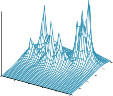
Density
Density
Density
0 0.20.4
0.60.8
1
0.8
0.6
0.4
0.2
1 0
0 0.20.4
0.60.8
1
0.8
0.6
0.4
0.2
1 0
0 0.20.4
0.60.8
1
0.8
0.6
0.4
0.2
1 0
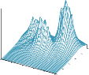
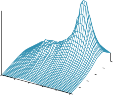
(a) (b) (c)
Figure 21.9 Density estimation using k-nearest-neighbors, applied to the data in Fig-
ure 21.8(b), for k = 3, 10, and 40 respectively. k = 3 is too spiky, 40 is too smooth, and
10 is just about right. The best value for k can be chosen by cross-validation.
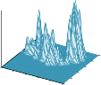
Density
Density
Density
0 0.20.4
0.60.8
1
0.8
0.6
0.4
0.2
1 0
0 0.20.4
0.60.8
1
0.8
0.6
0.4
0.2
1 0
0 0.20.4
0.60.8
1
0.8
0.6
0.4
0.2
1 0
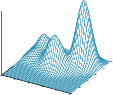
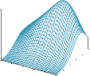
(a) (b) (c)
Figure 21.10 Density estimation using kernels for the data in Figure 21.8(b), using Gaussian
kernels with w = 0.02, 0.07, and 0.20 respectively. w = 0.07 is about right.
still have the problem of choosing a suitable value for kernel width w; Figure 21.10 shows
values that are too small, just right, and too large. A good value of w can be chosen by using
cross-validation.
Latent variable
Learning with Hidden Variables: The EM Algorithm
The preceding section dealt with the fully observable case. Many real-world problems have
hidden variables (sometimes called latent variables), which are not observable in the data.
For example, medical records often include the observed symptoms, the physician’s diagno-
sis, the treatment applied, and perhaps the outcome of the treatment, but they seldom contain
a direct observation of the disease itself! (Note that the diagnosis is not the disease; it is
a causal consequence of the observed symptoms, which are in turn caused by the disease.)
One might ask, “If the disease is not observed, could we construct a model based only on
the observed variables?” The answer appears in Figure 21.11, which shows a small, fictitious
diagnostic model for heart disease. There are three observable predisposing factors and three
observable symptoms (which are too depressing to name). Assume that each variable has
three possible values (e.g., none, moderate, and severe). Removing the hidden variable from
Section 21.3 Learning with Hidden Variables: The EM Algorithm 789
2
2
Smoking
Diet
Exercise
162
486
Symptom1 Symptom2
Symptom3
2
2
Smoking
Diet
Exercise
54 HeartDisease
6
6
Symptom1
Symptom2
Symptom3
2 2
6 54
(a) (b)
Figure 21.11 (a) A simple diagnostic network for heart disease, which is assumed to be
a hidden variable. Each variable has three possible values and is labeled with the number
of independent parameters in its conditional distribution; the total number is 78. (b) The
equivalent network with HeartDisease removed. Note that the symptom variables are no
longer conditionally independent given their parents. This network requires 708 parameters.
the network in (a) yields the network in (b); the total number of parameters increases from 78
to 708. Thus, latent variables can dramatically reduce the number of parameters required to K
specify a Bayesian network. This, in turn, can dramatically reduce the amount of data needed
to learn the parameters.
Hidden variables are important, but they do complicate the learning problem. In Fig-
ure 21.11(a), for example, it is not obvious how to learn the conditional distribution for
HeartDisease, given its parents, because we do not know the value of HeartDisease in each
case; the same problem arises in learning the distributions for the symptoms. This section
maximization
describes an algorithm called expectation–maximization, or EM, that solves this problem Expectation–
in a very general way. We will show three examples and then provide a general description.
The algorithm seems like magic at first, but once the intuition has been developed, one can
find applications for EM in a huge range of learning problems.
Unsupervised clustering: Learning mixtures of Gaussians
clustering
Unsupervised clustering is the problem of discerning multiple categories in a collection of Unsupervised
objects. The problem is unsupervised because the category labels are not given. For example,
suppose we record the spectra of a hundred thousand stars; are there different types of stars
revealed by the spectra, and, if so, how many types and what are their characteristics? We are
all familiar with terms such as “red giant” and “white dwarf,” but the stars do not carry these
labels on their hats—astronomers had to perform unsupervised clustering to identify these
categories. Other examples include the identification of species, genera, orders, phylum, and
so on in the Linnaean taxonomy and the creation of natural kinds for ordinary objects (see
Chapter 10).
Unsupervised clustering begins with data. Figure 21.12(b) shows 500 data points, each of
which specifies the values of two continuous attributes. The data points might correspond to
stars, and the attributes might correspond to spectral intensities at two particular frequencies.
790 Chapter 21 Learning Probabilistic Models
1
0.8
0.6
0.4
0.2
0
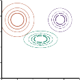
0 0.2 0.4 0.6 0.8 1
1
0.8
0.6
0.4
0.2
0
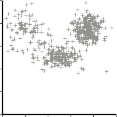
0 0.2 0.4 0.6 0.8 1
1
0.8
0.6
0.4
0.2
0
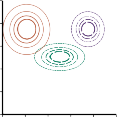
0 0.2 0.4 0.6 0.8 1
(a) (b) (c)
Figure 21.12 (a) A Gaussian mixture model with three components; the weights (left-to-
right) are 0.2, 0.3, and 0.5. (b) 500 data points sampled from the model in (a). (c) The model
reconstructed by EM from the data in (b).

Mixture distribution
Component
Mixture of Gaussians
Next, we need to understand what kind of probability distribution might have generated the
data. Clustering presumes that the data are generated from a mixture distribution, P. Such
a distribution has k components, each of which is a distribution in its own right. A data
point is generated by first choosing a component and then generating a sample from that
component. Let the random variable C denote the component, with values 1, . . . , k; then the
mixture distribution is given by
k
|
P(x) = ∑ P(C = i) P(x C = i) ,
i = 1
where x refers to the values of the attributes for a data point. For continuous data, a natural
choice for the component distributions is the multivariate Gaussian, which gives the so-called
mixture of Gaussians family of distributions. The parameters of a mixture of Gaussians
are wi = P(C = i) (the weight of each component), µi (the mean of each component), and Σi
(the covariance of each component). Figure 21.12(a) shows a mixture of three Gaussians;
this mixture is in fact the source of the data in (b) as well as being the model shown in
Figure 21.8(a) on page 787.
The unsupervised clustering problem, then, is to recover a Gaussian mixture model like
the one in Figure 21.12(a) from raw data like that in Figure 21.12(b). Clearly, if we knewwhich component generated each data point, then it would be easy to recover the component
Gaussians: we could just select all the data points from a given component and then apply (a
multivariate version of) Equation (21.4) (page 780) for fitting the parameters of a Gaussian
to a set of data. On the other hand, if we knew the parameters of each component, then we
could, at least in a probabilistic sense, assign each data point to a component.
The problem is that we know neither the assignments nor the parameters. The basic idea
of EM in this context is to pretend that we know the parameters of the model and then to
infer the probability that each data point belongs to each component. After that, we refit
the components to the data, where each component is fitted to the entire data set with each
point weighted by the probability that it belongs to that component. The process iterates
Section 21.3 Learning with Hidden Variables: The EM Algorithm 791
until convergence. Essentially, we are “completing” the data by inferring probability distri-
butions over the hidden variables—which component each data point belongs to—based on
the current model. For the mixture of Gaussians, we initialize the mixture-model parameters
arbitrarily and then iterate the following two steps:
E-step: Compute the probabilities pi j = P(C = i | x j), the probability that datum x j was
generated by component i. By Bayes’ rule, we have pi j = αP(x j |C = i)P(C = i). The
term P(x j |C = i) is just the probability at x j of the ith Gaussian, and the term P(C = i) is
just the weight parameter for the ith Gaussian. Define ni = ∑ j pi j, the effective number
of data points currently assigned to component i.
M-step: Compute the new mean, covariance, and component weights using the follow-
ing steps in sequence:
←
µi ∑ pi j x j /ni
j
j
Σi ← ∑ pi j(x j − µi)(x j − µi)T/ni
wi ← ni/N
where N is the total number of data points. The E-step, or expectation step, can be viewed
as computing the expected values pi j of the hidden indicator variables Zi j, where Zi j is 1 if Indicator variable
datum x j was generated by the ith component and 0 otherwise. The M-step, or maximizationstep, finds the new values of the parameters that maximize the log likelihood of the data,
given the expected values of the hidden indicator variables.
The final model that EM learns when it is applied to the data in Figure 21.12(a) is shown
in Figure 21.12(c); it is virtually indistinguishable from the original model from which the
data were generated (horizontal line). Figure 21.13(a) plots the log likelihood of the data
according to the current model as EM progresses.
There are two points to notice. First, the log likelihood for the final learned model slightly
exceeds that of the original model, from which the data were generated. This might seem sur-
prising, but it simply reflects the fact that the data were generated randomly and might not
provide an exact reflection of the underlying model. The second point is that EM increases K
the log likelihood of the data at every iteration. This fact can be proved in general. Further-
more, under certain conditions (that hold in most cases), EM can be proven to reach a local
maximum in likelihood. (In rare cases, it could reach a saddle point or even a local mini-
mum.) In this sense, EM resembles a gradient-based hill-climbing algorithm, but notice that
it has no “step size” parameter.
Things do not always go as well as Figure 21.13(a) might suggest. It can happen, for
example, that one Gaussian component shrinks so that it covers just a single data point. Then
its variance will go to zero and its likelihood will go to infinity! If we don’t know how many
components are in the mixture we have to try different values of k and see which is best; that
can be a source of error. Another problem is that two components can “merge,” acquiring
identical means and variances and sharing their data points. These kinds of degenerate local
maxima are serious problems, especially in high dimensions. One solution is to place priors
on the model parameters and to apply the MAP version of EM. Another is to restart a com-
ponent with new random parameters if it gets too small or too close to another component.
Sensible initialization also helps.
792 Chapter 21 Learning Probabilistic Models
700
600
Log-likelihood L
500
400
300
200
100
0
-100
-200
0 5 10 15 20
Iteration number
-1980
Log-likelihood L
-1990
-2000
-2010
-2020
0 20 40 60 80 100 120
Iteration number
(a) (b)
Figure 21.13 Graphs showing the log likelihood of the data, L, as a function of the EM
iteration. The horizontal line shows the log likelihood according to the true model. (a) Graph
for the Gaussian mixture model in Figure 21.12. (b) Graph for the Bayesian network in
Figure 21.14(a).
θ
P(Bag=1)
C
X
Bag | P(F=cherry | B) |
1 | θF1 |
2 | θF1 |
Bag
Flavor
Wrapper
Hole
(a) (b)
Figure 21.14 (a) A mixture model for candy. The proportions of different flavors, wrappers,
and presence of holes depend on the bag, which is not observed. (b) Bayesian network for
a Gaussian mixture. The mean and covariance of the observable variables X depend on the
component C.
Learning Bayes net parameter values for hidden variables
To learn a Bayesian network with hidden variables, we apply the same insights that worked
for mixtures of Gaussians. Figure 21.14(a) represents a situation in which there are two bags
of candy that have been mixed together. Candies are described by three features: in addition
to the Flavor and the Wrapper, some candies have a Hole in the middle and some do not.
The distribution of candies in each bag is described by a naive Bayes model: the features
Section 21.3 Learning with Hidden Variables: The EM Algorithm 793
are independent, given the bag, but the conditional probability distribution for each feature
depends on the bag. The parameters are as follows: θ is the prior probability that a candy
comes from Bag 1; θF1 and θF2 are the probabilities that the flavor is cherry, given that the
candy comes from Bag 1 or Bag 2 respectively; θW1 and θW2 give the probabilities that the
wrapper is red; and θH1 and θH2 give the probabilities that the candy has a hole.
The overall model is a mixture model: a weighted sum of two different distributions, each
of which is a product of independent, univariate distributions. (In fact, we can also model the
mixture of Gaussians as a Bayesian network, as shown in Figure 21.14(b).) In the figure, the
bag is a hidden variable because, once the candies have been mixed together, we no longer
know which bag each candy came from. In such a case, can we recover the descriptions of
the two bags by observing candies from the mixture? Let us work through an iteration of
EM for this problem. First, let’s look at the data. We generated 1000 samples from a model
whose true parameters are as follows:
θ = 0.5, θF1 = θW1 = θH1 = 0.8, θF2 = θW2 = θH2 = 0.3 . (21.9)
That is, the candies are equally likely to come from either bag; the first is mostly cherry with
red wrappers and holes; the second is mostly lime with green wrappers and no holes. The
counts for the eight possible kinds of candy are as follows:
| W = red | W = green |
| H = 1 | H = 0 | H = 1 | H = 0 |
F = cherry | 273 | 93 | 104 | 90 |
F = lime | 79 | 100 | 94 | 167 |
We start by initializing the parameters. For numerical simplicity, we arbitrarily choose5
θ(0) = 0.6, θ(0) = θ(0) = θ(0) = 0.6, θ(0) = θ(0) = θ(0) = 0.4 . (21.10)
F1 W 1 H1 F2 W 2 H2
First, let us work on the θ parameter. In the fully observable case, we would estimate this
directly from the observed counts of candies from bags 1 and 2. Because the bag is a hidden
variable, we calculate the expected counts instead. The expected count Nˆ (Bag = 1) is the
sum, over all candies, of the probability that the candy came from bag 1:
N
|
θ(1) = Nˆ (Bag = 1)/N = ∑ P(Bag = 1 flavor j, wrapperj, holesj)/N .
j = 1
These probabilities can be computed by any inference algorithm for Bayesian networks. For
a naive Bayes model such as the one in our example, we can do the inference “by hand,”
using Bayes’ rule and applying conditional independence:
(1)
1 N P(flavor j |Bag = 1)P(wrapperj |Bag = 1)P(holesj |Bag = 1)P(Bag = 1)
j = 1
j
j
j
θ = N
∑ ∑i P(flavor |Bag = i)P(wrapper |Bag = i)P(holes |Bag = i)P(Bag = i) .
Applying this formula to, say, the 273 red-wrapped cherry candies with holes, we get a con-
tribution of
273
(0) (0) (0) (0)
θ θ θ θ
F1 W 1 H1
F1
W 1
H1
F2
W 2
H2
1000 · θ(0)θ(0) θ(0)θ(0) + θ(0)θ(0) θ(0)(1 − θ(0)) ≈ 0.22797 .
5 It is better in practice to choose them randomly, to avoid local maxima due to symmetry.
794 Chapter 21 Learning Probabilistic Models
Continuing with the other seven kinds of candy in the table of counts, we obtain θ(1) = 0.6124.
Now let us consider the other parameters, such as θF1. In the fully observable case, we
would estimate this directly from the observed counts of cherry and lime candies from bag 1.
The expected count of cherry candies from bag 1 is given by
∑ P(Bag = 1 |Flavor j = cherry, wrapperj, holesj) .
j:Flavor j = cherry
Again, these probabilities can be calculated by any Bayes net algorithm. Completing this
process, we obtain the new values of all the parameters:
θ(1) = 0.6124, θ(1) = 0.6684, θ(1) = 0.6483, θ(1) = 0.6558,
F1
(1)
W 1 H1
(
(21.11)
W 2
H2
θF2 = 0.3887, θ(1) = 0.3817, θ 1) = 0.3827 .
Identifiability
The log likelihood of the data increases from about 2044 initially to about 2021 after
the first iteration, as shown in Figure 21.13(b). That is, the update improves the likelihood
itself by a factor of about e23 1010. By the tenth iteration, the learned model is a better
fit than the original model (L = 1982.214). Thereafter, progress becomes very slow. This
is not uncommon with EM, and many practical systems combine EM with a gradient-based
algorithm such as Newton–Raphson (see Chapter 4) for the last phase of learning.
—
≈
− −
work learning with hidden variables are directly available from the results of inference on
|
each example. Moreover, only local posterior probabilities are needed for each parameter.
Here, “local” means that the conditional probability table (CPT) for each variable Xi can be
learned from posterior probabilities involving just Xi and its parents Ui. Defining θi jk to be the
CPT parameter P(Xi = xi j Ui = uik), the update is given by the normalized expected counts
as follows:
θi jk ← Nˆ (Xi = xi j, Ui = uik)/Nˆ (Ui = uik) .
The expected counts are obtained by summing over the examples, computing the probabili-
ties P(Xi = xi j, Ui = uik) for each by using any Bayes net inference algorithm. For the exact
algorithms—including variable elimination—all these probabilities are obtainable directly as
a by-product of standard inference, with no need for extra computations specific to learning.
Moreover, the information needed for learning is available locally for each parameter.
—
—
Standing back a little, we can think about what the EM algorithm is doing in this exam-
ple as recovering seven parameters (θ, θF1, θW1, θH1, θF2, θW2, θH2) from seven (23 1)
observed counts in the data. (The eighth count is fixed by the fact that the counts sum to
1000.) If each candy were described by two attributes rather than three (say, omitting the
holes), we would have had five parameters (θ, θF1, θW1, θF2, θW2) but only three (22 1)
observed counts. In such a case it is not possible to recover the mixture weight θ or the char-
acteristics of the two bags that were mixed together. We say that the two-attribute model is
not identifiable.
Identifiability in Bayesian networks is a tricky issue. Note that even with three attributes
and seven counts, we cannot uniquely recover the model, because there are two observation-
ally equivalent models with the Bag variable flipped. Depending on how the parameters are
initialized, EM will converge either to a model where bag 1 has mostly cherry and bag 2
mostly lime, or vice versa. This kind if non-identifiability is unavoidable with variables that
are never observed.
P(R1|R0)
P(R1|R0)
P(R1|R0)
Section 21.3 Learning with Hidden Variables: The EM Algorithm 795
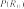
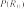
Rain0
Rain1
Rain2
Rain3
Rain4
Umbrella1 Umbrella2 Umbrella3 Umbrella4
Rain0
Rain1
Umbrella1
Figure 21.15 An unrolled dynamic Bayesian network that represents a hidden Markov
model (repeat of Figure 14.16).
Learning hidden Markov models
Our final application of EM involves learning the transition probabilities in hidden Markov
models (HMMs). Recall from Section 14.3 that a hidden Markov model can be represented
by a dynamic Bayes net with a single discrete state variable, as illustrated in Figure 21.15.
Each data point consists of an observation sequence of finite length, so the problem is to
learn the transition probabilities from a set of observation sequences (or from just one long
sequence).
|
We have already seen how to learn Bayes nets, but there is a complication: in Bayes
nets, each parameter is distinct; in a hidden Markov model, on the other hand, the individual
transition probabilities from state i to state j at time t, θi jt = P(Xt+1 = j Xt = i), are repeated
across time—that is, θi jt = θi j for all t. To estimate the transition probability from state i to
state j, we simply calculate the expected proportion of times that the system undergoes a
transition to state j when in state i:
θi j ← ∑Nˆ (Xt+1 = j, Xt = i)/ ∑Nˆ (Xt = i) .
t t
The expected counts are computed by an HMM inference algorithm. The forward–backwardalgorithm shown in Figure 14.4 can be modified very easily to compute the necessary prob-
abilities. One important point is that the probabilities required are obtained by smoothingrather than filtering. Filtering gives the probability distribution of the current state given the
past, but smoothing gives the distribution given all evidence, including what happens after
a particular transition occurred. The evidence in a murder case is usually obtained after the
crime (i.e., the transition from state i to state j) has taken place.
The general form of the EM algorithm
We have seen several instances of the EM algorithm. Each involves computing expected
values of hidden variables for each example and then recomputing the parameters, using the
expected values as if they were observed values. Let x be all the observed values in all the
examples, let Z denote all the hidden variables for all the examples, and let θ be all the
parameters for the probability model. Then the EM algorithm is
θ(i+1) = argmax∑P(Z = z | x, θ(i))L(x, Z = z | θ) .
θ z
796 Chapter 21 Learning Probabilistic Models
|
This equation is the EM algorithm in a nutshell. The E-step is the computation of the summa-
tion, which is the expectation of the log likelihood of the “completed” data with respect to the
distribution P(Z = z x, θ(i)), which is the posterior over the hidden variables, given the data.
The M-step is the maximization of this expected log likelihood with respect to the parame-
ters. For mixtures of Gaussians, the hidden variables are the Zi js, where Zi j is 1 if example j
was generated by component i. For Bayes nets, Zi j is the value of unobserved variable Xi in
example j. For HMMs, Z jt is the state of the sequence in example j at time t. Starting from
the general form, it is possible to derive an EM algorithm for a specific application once the
appropriate hidden variables have been identified.
As soon as we understand the general idea of EM, it becomes easy to derive all sorts
of variants and improvements. For example, in many cases the E-step—the computation of
posteriors over the hidden variables—is intractable, as in large Bayes nets. It turns out that
one can use an approximate E-step and still obtain an effective learning algorithm. With a
sampling algorithm such as MCMC (see Section 13.4), the learning process is very intuitive:
each state (configuration of hidden and observed variables) visited by MCMC is treated ex-
actly as if it were a complete observation. Thus, the parameters can be updated directly after
each MCMC transition. Other forms of approximate inference, such as variational methods
and loopy belief propagation, have also proved effective for learning very large networks.
Learning Bayes net structures with hidden variables
In Section 21.2.7, we discussed the problem of learning Bayes net structures with complete
data. When unobserved variables influence observed data, things get more difficult. In the
simplest case, a human expert might tell the learning algorithm that certain hidden variables
exist, leaving it to the algorithm to find a place for them in the network structure. For example,
an algorithm might try to learn the structure shown in Figure 21.11(a) on page 789, given the
information that HeartDisease (a three-valued variable) should be included in the model. As
in the complete-data case, the overall algorithm has an outer loop that searches over structures
and an inner loop that fits the network parameters given the structure.
If the learning algorithm is not told which hidden variables exist, then there are two
choices: either pretend that the data are really complete—which may force the algorithm to
learn a parameter-intensive model such as the one in Figure 21.11(b)—or invent new hidden
variables in order to simplify the model. The latter approach can be implemented by including
new modification choices in the structure search: in addition to modifying links, the algorithm
can add or delete a hidden variable or change its arity. Of course, the algorithm will not know
that the new variable it has invented is called HeartDisease; nor will it have meaningful
names for the values. Fortunately, newly invented hidden variables will usually be connected
to preexisting variables, so a human expert can often inspect the local conditional distributions
involving the new variable and ascertain its meaning.
As in the complete-data case, pure maximum-likelihood structure learning will result in
a completely connected network (moreover, one with no hidden variables), so some form of
complexity penalty is required. We can also apply MCMC to sample many possible network
structures, thereby approximating Bayesian learning. For example, we can learn mixtures of
Gaussians with an unknown number of components by sampling over the number; the approx-
imate posterior distribution for the number of Gaussians is given by the sampling frequencies
of the MCMC process.
Summary 797
For the complete-data case, the inner loop to learn the parameters is very fast—just a
matter of extracting conditional frequencies from the data set. When there are hidden vari-
ables, the inner loop may involve many iterations of EM or a gradient-based algorithm, and
each iteration involves the calculation of posteriors in a Bayes net, which is itself an NP-hard
problem. To date, this approach has proved impractical for learning complex models.
One possible improvement is the so-called structural EM algorithm, which operates in Structural EM
much the same way as ordinary (parametric) EM except that the algorithm can update the
structure as well as the parameters. Just as ordinary EM uses the current parameters to com-
pute the expected counts in the E-step and then applies those counts in the M-step to choose
new parameters, structural EM uses the current structure to compute expected counts and
then applies those counts in the M-step to evaluate the likelihood for potential new struc-
tures. (This contrasts with the outer-loop/inner-loop method, which computes new expected
counts for each potential structure.) In this way, structural EM may make several structural
alterations to the network without once recomputing the expected counts, and is capable of
learning nontrivial Bayes net structures. Structural EM has a search space over the space
of structures rather than the space of structures and parameters. Nonetheless, much work
remains to be done before we can say that the structure-learning problem is solved.
Summary
Statistical learning methods range from simple calculation of averages to the construction of
complex models such as Bayesian networks. They have applications throughout computer
science, engineering, computational biology, neuroscience, psychology, and physics. This
chapter has presented some of the basic ideas and given a flavor of the mathematical under-
pinnings. The main points are as follows:
Bayesian learning methods formulate learning as a form of probabilistic inference,
using the observations to update a prior distribution over hypotheses. This approach
provides a good way to implement Ockham’s razor, but quickly becomes intractable for
complex hypothesis spaces.
Maximum a posteriori (MAP) learning selects a single most likely hypothesis given
the data. The hypothesis prior is still used and the method is often more tractable than
full Bayesian learning.
Maximum-likelihood learning simply selects the hypothesis that maximizes the likeli-
hood of the data; it is equivalent to MAP learning with a uniform prior. In simple cases
such as linear regression and fully observable Bayesian networks, maximum-likelihood
solutions can be found easily in closed form. Naive Bayes learning is a particularly
effective technique that scales well.
When some variables are hidden, local maximum likelihood solutions can be found
using the expectation maximization (EM) algorithm. Applications include unsuper-
vised clustering using mixtures of Gaussians, learning Bayesian networks, and learning
hidden Markov models.
Learning the structure of Bayesian networks is an example of model selection. This
usually involves a discrete search in the space of structures. Some method is required
for trading off model complexity against degree of fit.
798 Chapter 21 Learning Probabilistic Models
Nonparametric models represent a distribution using the collection of data points.
Thus, the number of parameters grows with the training set. Nearest-neighbors methods
look at the examples nearest to the point in question, whereas kernel methods form a
distance-weighted combination of all the examples.
Statistical learning continues to be a very active area of research. Enormous strides have been
made in both theory and practice, to the point where it is possible to learn almost any model
for which exact or approximate inference is feasible.
Bibliographical and Historical Notes
The application of statistical learning techniques in AI was an active area of research in the
early years (see Duda and Hart, 1973) but became separated from mainstream AI as the
latter field concentrated on symbolic methods. A resurgence of interest occurred shortly after
the introduction of Bayesian network models in the late 1980s; at roughly the same time,
a statistical view of neural network learning began to emerge. In the late 1990s, there was
a noticeable convergence of interests in machine learning, statistics, and neural networks,
centered on methods for creating large probabilistic models from data.
The naive Bayes model is one of the oldest and simplest forms of Bayesian network,
dating back to the 1950s. Its origins were mentioned in Chapter 12. Its surprising success is
partially explained by Domingos and Pazzani (1997). A boosted form of naive Bayes learning
won the first KDD Cup data mining competition (Elkan, 1997). Heckerman (1998) gives an
excellent introduction to the general problem of Bayes net learning. Bayesian parameter
learning with Dirichlet priors for Bayesian networks was discussed by Spiegelhalter et al.(1993). The beta distribution as a conjugate prior for a Bernoulli variable was first derived
by Thomas (Bayes, 1763) and later reintroduced by Karl Pearson (1895) as a model for
skewed data; for many years it was known as a “Pearson Type I distribution.” Bayesian linear
regression is discussed in the text by Box and Tiao (1973); Minka (2010) provides a concise
summary of the derivations for the general multivariate case.
Several software packages incorporate mechanisms for statistical learning with Bayes
net models. These include BUGS (Bayesian inference Using Gibbs Sampling) (Gilks et al.,
1994; Lunn et al., 2000, 2013), JAGS (Just Another Gibbs Sampler) (Plummer, 2003), and
STAN (Carpenter et al., 2017).
The first algorithms for learning Bayes net structures used conditional independence
tests (Pearl, 1988; Pearl and Verma, 1991). Spirtes et al. (1993) implemented a compre-
hensive approach in the TETRAD package for Bayes net learning. Algorithmic improvements
since then led to a clear victory in the 2001 KDD Cup data mining competition for a Bayes
net learning method (Cheng et al., 2002). (The specific task here was a bioinformatics prob-
lem with 139,351 features!) A structure-learning approach based on maximizing likelihood
was developed by Cooper and Herskovits (1992) and improved by Heckerman et al. (1994).
More recent algorithms have achieved quite respectable performance in the complete-
data case (Moore and Wong, 2003; Teyssier and Koller, 2005). One important component is
an efficient data structure, the AD-tree, for caching counts over all possible combinations of
variables and values (Moore and Lee, 1997). Friedman and Goldszmidt (1996) pointed out
the influence of the representation of local conditional distributions on the learned structure.
Bibliographical and Historical Notes 799
The general problem of learning probability models with hidden variables and missing
data was addressed by Hartley (1958), who described the general idea of what was later
called EM and gave several examples. Further impetus came from the Baum–Welch algo-
rithm for HMM learning (Baum and Petrie, 1966), which is a special case of EM. The paper
by Dempster, Laird, and Rubin (1977), which presented the EM algorithm in general form
and analyzed its convergence, is one of the most cited papers in both computer science and
statistics. (Dempster himself views EM as a schema rather than an algorithm, since a good
deal of mathematical work may be required before it can be applied to a new family of dis-
tributions.) McLachlan and Krishnan (1997) devote an entire book to the algorithm and its
properties. The specific problem of learning mixture models, including mixtures of Gaus-
sians, is covered by Titterington et al. (1985).
Within AI, AUTOCLASS (Cheeseman et al., 1988; Cheeseman and Stutz, 1996) was the
first successful system that used EM for mixture modeling. AUTOCLASS was applied to
a number of real-world scientific classification tasks, including the discovery of new types
of stars from spectral data (Goebel et al., 1989) and new classes of proteins and introns in
DNA/protein sequence databases (Hunter and States, 1992).
For maximum-likelihood parameter learning in Bayes nets with hidden variables, EM
and gradient-based methods were introduced around the same time by Lauritzen (1995) and
Russell et al. (1995). The structural EM algorithm was developed by Friedman (1998) and
applied to maximum-likelihood learning of Bayes net structures with latent variables. Fried-
man and Koller (2003) describe Bayesian structure learning. Daly et al. (2011) review the
field of Bayes net learning, providing extensive citations to the literature.
The ability to learn the structure of Bayesian networks is closely connected to the issue
of recovering causal information from data. That is, is it possible to learn Bayes nets in
such a way that the recovered network structure indicates real causal influences? For many
years, statisticians avoided this question, believing that observational data (as opposed to data
generated from experimental trials) could yield only correlational information—after all, any
two variables that appear related might in fact be influenced by a third, unknown causal
factor rather than influencing each other directly. Pearl (2000) has presented convincing
arguments to the contrary, showing that there are in fact many cases where causality can be
ascertained and developing the causal network formalism to express causes and the effects
of intervention as well as ordinary conditional probabilities.
Nonparametric density estimation, also called Parzen window density estimation, was
investigated initially by Rosenblatt (1956) and Parzen (1962). Since that time, a huge litera-
ture has developed investigating the properties of various estimators. Devroye (1987) gives a
thorough introduction. There is also a rapidly growing literature on nonparametric Bayesian
methods, originating with the seminal work of Ferguson (1973) on the Dirichlet process, Dirichlet process
which can be thought of as a distribution over Dirichlet distributions. These methods are par-
ticularly useful for mixtures with unknown numbers of components. Ghahramani (2005) and
Jordan (2005) provide useful tutorials on the many applications of these ideas to statistical
learning. The text by Rasmussen and Williams (2006) covers the Gaussian process, which Gaussian process
gives a way of defining prior distributions over the space of continuous functions.
The material in this chapter brings together work from the fields of statistics and pattern
recognition, so the story has been told many times in many ways. Good texts on Bayesian
statistics include those by DeGroot (1970), Berger (1985), and Gelman et al. (1995). Bishop
800 Chapter 21 Learning Probabilistic Models
(2007), Hastie et al. (2009), Barber (2012), and Murphy (2012) provide excellent introduc-
tions to statistical machine learning. For pattern classification, the classic text for many years
has been Duda and Hart (1973), now updated (Duda et al., 2001). The annual NeurIPS
(Neural Information Processing Systems, formerly NIPS) conference, whose proceedings are
published as the series Advances in Neural Information Processing Systems, includes many
Bayesian learning papers, as does the annual conference on Artificial Intelligence and Statis-
tics. Specifically Bayesian venues include the Valencia International Meetings on Bayesian
Statistics and the journal Bayesian Analysis.